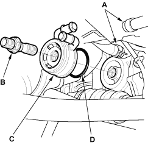
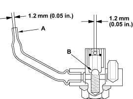

- Remove the oil filter (see page 8-6).
- Remove the oil cooler bypass hoses (A) and oil cooler centre bolt (B), then remove the oil cooler (C).

- Install the oil cooler using a new O-ring (D). Tighten the oil cooler centre bolt to 74 Nm (7.5 kgf/m, 54 lbf/ft).

- Remove the oil jet, and inspect it as follows.
- Make sure that a 1.1 mm (0.04 in.) diameter drill will go through the nozzle hole (A) (1.2 mm (0.05 in.) diameter).
- Insert the other end of a 1.1 mm (0.04 in.) drill into the oil intake (1.2 mm (0.05 in.) diameter).
Make sure the check ball (B) moves smoothly and has a stroke of approximately 4.0 mm (0.16 in.).
- Check the oil jet operation with an air nozzle. It should take at least 200 kPa (2.0 kgf/cm2, 28 psi) to unseat the check ball.
NOTE: Replace the oil jet assembly if the nozzle is damaged or bent.

- Carefully install the oil jet. The mounting torque is critical.
Torque:
16 Nm (1.6 kgf/m, 12 lbf/ft)